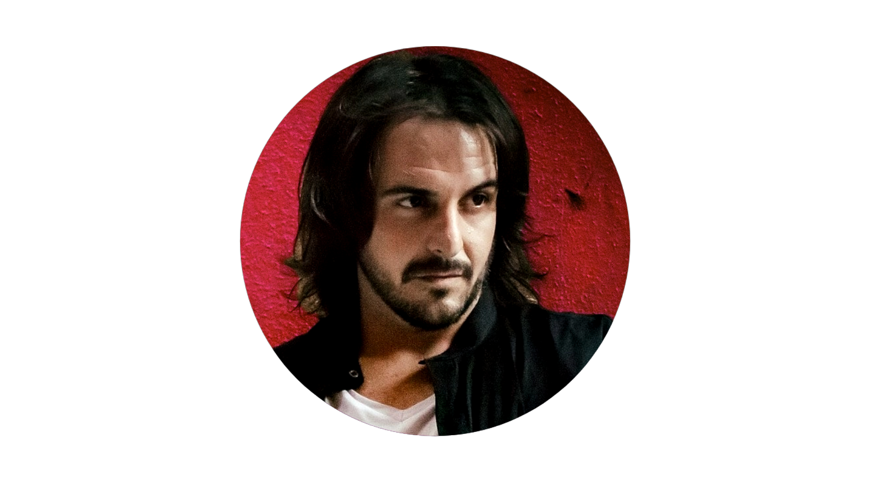

Hello, I'm
Juan De Aranzadi
Musician & Producer


Hello, I'm
Musician & Producer
Personal
Dedicated and detail-oriented Musician, Performer and
Music Producer with 20 years of experience.
I have committed myself to develop my interest in
music and to become a musician since childhood.
I
started playing piano and guitar when I was in primary
school.
Aside from enjoying the solo moment, I prefer
to play with the members of the orchestra.
Music is something I feel very passionate about, having
come from a extremely musical family, music has
always been a prominent part of my life.
My experience
in various areas of the industry has fed this passion
and I am very keen to strive towards a career in this
very area.
Explore My


Education
2003 - 2009 |
-Harmony -Guitar -Musical language -Composition |
Carlos Pino SchoolMalaga |
2009 - 2015 |
-Music Production -Ear training -Film scoring - Composition -Guitar and piano - Musical language - Mixing & mastering -Audio Editing |
Creativa Music SchoolMadrid |
2015-2022 |
Key responsibilities:
|
GUITAR TEACHERCrescendo Music School |
2018-2022 |
Key responsibilities:
|
MUSIC PRODUCTION TEACHERCrescendo Music School |
2020-2022 |
Key responsibilities:
|
GUITAR TEACHERSalliver School |
2012-2014 |
Key responsibilities:
|
GUITAR TEACHEREmilio Casado School |
2011-2013 |
Key responsibilities:
|
GUITAR TEACHERAntonio Machado Center |
2011-2013 |
Key responsibilities:
|
GUITAR TEACHEReducation company Idelnet |
2004-Present |
|
Session musician for studio recording and live performances, music producer, and sound technician |
Musica Personal
contact